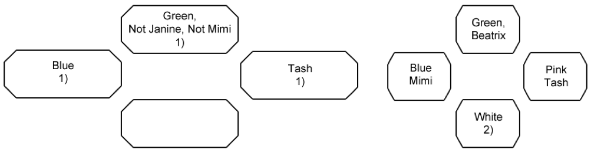

Some girls are on a street. On the street, standing in a circle, four girls are talking: Janine, Mimi, Beatrix and Tash. A girl in a green dress $($not Janine or Mimi$)$ stands between a girl in a blue dress and Tash. A girl in a white dress is standing between a girl in a pink dress and Mimi. What dress is on each of the girls?
We rewrite the condition of the problem by numbering the data. 1$)$ A girl in a green dress $($not Janine or Mimi$)$ stands between a girl in a blue dress and Tash. 2$)$ A girl in a white dress is standing between a girl in a pink dress and Mimi. What dress is on each of the girls?

On Janine there is a white dress, on Mimi - blue, on Tash - pink, on Beatrix - green. They stand in a circle like this: Janine, Mimi, Beatrix, Tash